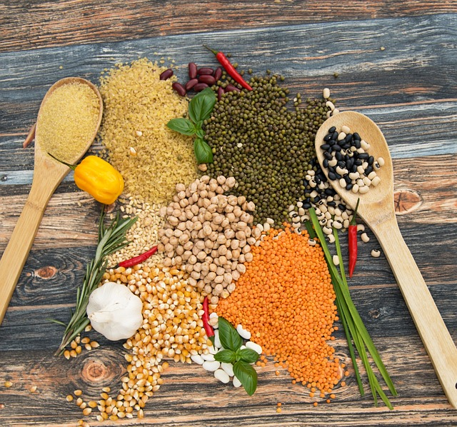

Lentils are a type of legume known for their small, lens-shaped seeds. They are widely consumed around the world and are
valued for their nutritional value and versatility in cooking. Here is some information about lentils, including their protein content
and different ways to enjoy them:
1. Protein content: Lentils are an excellent plant-based source of protein. They are often referred to as a "poor man's meat" due to their
high protein content. On average, one cup (198 grams) of cooked lentils contains about 18 grams of protein. Lentils also provide dietary
fiber, complex carbohydrates, and a range of essential vitamins and minerals.
2. Nutritional profile: Lentils offer a host of nutrients, making them a nutritious addition to a balanced diet. They are rich in folate,
iron, potassium, magnesium, and various B vitamins. Lentils are also low in fat and cholesterol-free.
3. Cooking methods: Lentils can be cooked in various ways, allowing for a range of flavors and textures:
- Boiling: Lentils can be boiled in water or broth until tender. The cooking time depends on the type of lentils. Red lentils typically
cook faster, while green or brown lentils take a bit longer. Use cooked lentils as a base for salads, soups, stews, or side dishes.
- Soups and stews: Lentils are popular ingredients in hearty soups and stews. They add texture, flavor, and nutritional value to the dish.
Consider making lentil soup, lentil curry, or lentil chili.
- Salads: Cooked lentils can be used in cold salads, combining them with vegetables, herbs, and dressings. They add a protein boost and
make salads more satisfying.
- Side dishes: Lentils can be served as a nutritious side dish alongside main courses. Season them with herbs, spices, or sautéed
vegetables to enhance the flavor.
- Lentil burgers and patties: Cooked lentils can be mashed and used as a base for vegetarian or vegan burger patties. Combine them with
breadcrumbs, vegetables, and seasonings, then pan-fry or bake them until golden.
- Indian dishes: Lentils are extensively used in Indian cuisine. Popular dishes include dal, a spiced lentil stew, and various lentil-based
curries.
- Lentil flour: Lentils can be ground into flour and used in baking recipes to add protein and a unique flavor profile. Lentil flour is
gluten-free and can be used to make pancakes, bread, or savory snacks.
Remember to sort and rinse lentils before cooking to remove any debris or impurities. Lentils are relatively quick to cook compared to other
legumes, but the cooking time may vary depending on the variety and freshness. Additionally, it's worth noting that some people may experience digestive discomfort with legumes, including lentils. Pre-soaking, cooking them thoroughly, and gradually incorporating them into your diet can help minimize any discomfort.
As with any dietary considerations, it's advisable to consult with a healthcare professional or registered dietitian for personalized advice
based on your specific dietary needs and goals.